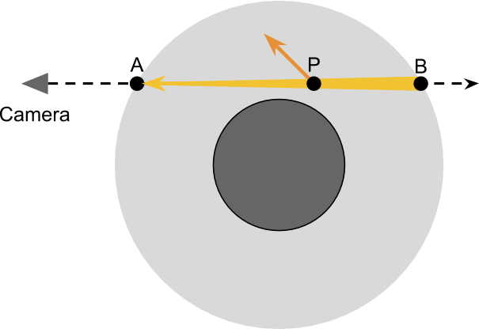
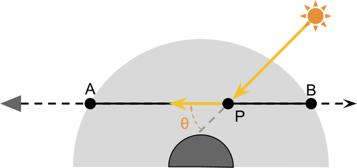
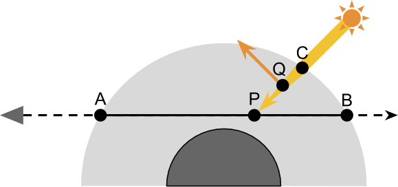

AtmosphericScattering
Table of Contents
AtmosphericScattering note.
<!– more –>
Unity Procedural Skybox

AtmosphericScattering
Volumetric Atmospheric Scattering
单次散射
外散射
空气中的分子会将朝向指定方向(如摄像机方向)的光反射到其他方向。
真实的光源每秒会发射出很多(10^15)个光子，每个光子都有一定概率被空气分子反射。光传播的介质密度越大，单个光子被反射的概率越高。随着传播距离越长，剩余没被反射的光子越少。
内散射
空气中的分子会将其他方向的光反射到指定的方向(如摄像机方向)。
Volumetric Single Scattering
单个光子射线可以被反射很多次。这意味着光到达摄像机所经过的路径可能会非常复杂。使用 raytracing 的方式来渲染半透明材质，需要模拟多个独立的光线路径，对于实时渲染来说，这样的计算消耗太昂贵了。本系列教程中使用的技术被称为 single scattering，其只考虑光射线单次散射事件。
渲染真实感天空的关键是，模拟光线经过星球的大气层所发生的事情。下图展示了一个摄像机，视线穿过了星球的大气层。渲染的基本理念是计算光从 B 传播到 A 的过程中，其如何被散射所影响。也就是说，需要计算光线传播到摄像机过程中，外散射和内散射的贡献。
依据我们的经验，外散射会导致光的衰减。在任意一点 P 处的光能量都有一定概率被反射到偏离摄像机的方向。

为了正确计算在任意 P 点，有多少外散射发生，首先我们需要知道起初在 P 点有多少光能量。假设只有一个恒星(太阳)照亮星球，P点处接收到的所有光都来自太阳。这些光能量中的一部分会被内散射，即被偶然地反射到摄像机。

考虑上面两步(从 P 到 A 外散射后剩余的部分 和 在 P 点内散射到摄像机方向增加的部分)已经足够近似观察到的大气散射现象了。但是，计算起初在 P 的光能量是比较复杂的，光线经过大气从 C 到达 P，其本身也受外散射。

参考资料
alan zucconi Totorials
- 1-Volumetric Atmospheric Scattering en https://www.alanzucconi.com/2017/10/10/atmospheric-scattering-1/
- 1-Volumetric Atmospheric Scattering cn https://zhuanlan.zhihu.com/p/32525403
- 2-The Theory Behind Atmospheric Scattering en https://www.alanzucconi.com/2017/10/10/atmospheric-scattering-2/
- 2-The Theory Behind Atmospheric Scattering cn https://zhuanlan.zhihu.com/p/32594753
- 3-The Mathematics of Rayleigh Scattering en https://www.alanzucconi.com/2017/10/10/atmospheric-scattering-3/
- 3-The Mathematics of Rayleigh Scattering cn https://zhuanlan.zhihu.com/p/32676375
- 4-A Journey Through the Atmosphere en https://www.alanzucconi.com/2017/10/10/atmospheric-scattering-4/
- 4-A Journey Through the Atmosphere cn https://zhuanlan.zhihu.com/p/32695071
- 5-A Shader for the Atmospheric Sphere en https://www.alanzucconi.com/2017/10/10/shader-atmospheric-sphere/
- 5-A Shader for the Atmospheric Sphere cn https://zhuanlan.zhihu.com/p/32756395
- 6-Intersecting The Atmosphere en https://www.alanzucconi.com/2017/10/10/atmospheric-scattering-6/
- 6-Intersecting The Atmosphere cn https://zhuanlan.zhihu.com/p/32790566
- 7-Atmospheric Scattering Shader en https://www.alanzucconi.com/2017/10/10/atmospheric-scattering-7/
- 7-Atmospheric Scattering Shader cn https://zhuanlan.zhihu.com/p/32856984
Github
Other
- https://www.scratchapixel.com/lessons/procedural-generation-virtual-worlds/simulating-sky/simulating-colors-of-the-sky
- https://developer.nvidia.com/gpugems/GPUGems2/gpugems2_chapter16.html
- https://atomworld.wordpress.com/2014/12/22/flexible-physical-accurate-atmosphere-scattering-part-1/
- https://docs.unity.cn/Packages/com.unity.render-pipelines.high-definition@10.0/manual/Atmospheric-Scattering.html
- https://blogs.unity3d.com/cn/2015/05/28/atmospheric-scattering-in-the-blacksmith/
- https://dawnarc.com/2019/12/graphicsatmospheric-scattering-notes/